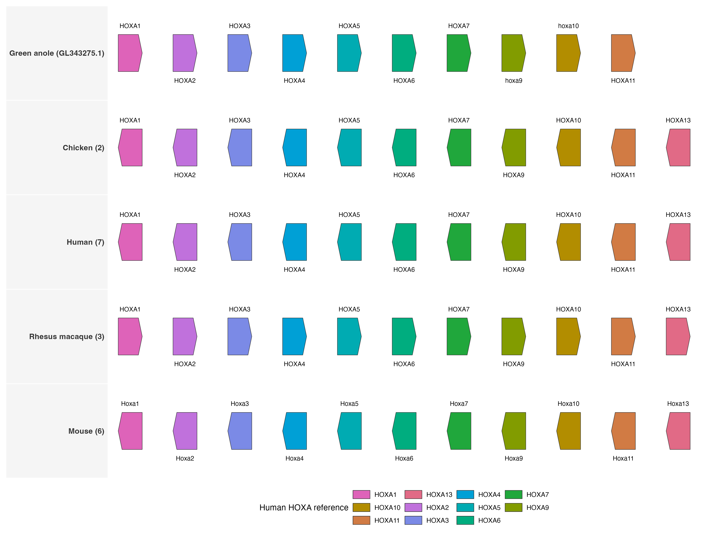

Overview
This demo uses a small curated Ensembl release 115 dataset to show HOXA/Hoxa gene synteny across human, rhesus macaque, mouse, chicken, and green anole. It is designed as a vertebrate example for comparative-genomics users who want to see conserved gene order, rearranged genomic coordinates, and cross-species orthology in one figure.
The dataset is bundled as plot-ready TSV files under
inst/extdata/hoxa_ensembl115. The figure uses
geom_genetag() for HOXA gene intervals and
geom_synteny_link() for orthology/synteny ribbons between
adjacent species. The plotted x coordinates are oriented so each cluster
reads in a comparable HOXA13-to-HOXA1 order. Original Ensembl
coordinates are retained in the TSV files.
library(ggexon)
demo_dir <- system.file("extdata", "hoxa_ensembl115", package = "ggexon")
genes <- read.delim(file.path(demo_dir, "hoxa_genes.tsv"), check.names = FALSE)
links <- read.delim(file.path(demo_dir, "hoxa_links.tsv"), check.names = FALSE)
species <- read.delim(file.path(demo_dir, "hoxa_species.tsv"), check.names = FALSE)
homology <- read.delim(file.path(demo_dir, "hoxa_homology.tsv"), check.names = FALSE)
# Insert one ribbon-only panel between every adjacent pair of species tracks.
species_tracks <- species$species
link_tracks <- paste0("link_", head(species_tracks, -1), "_", tail(species_tracks, -1))
track_levels <- as.vector(rbind(head(species_tracks, -1), link_tracks))
track_levels <- c(track_levels, tail(species_tracks, 1))
track_labels <- setNames(track_levels, track_levels)
track_labels[species_tracks] <- sprintf(
"%s (%s)",
species$display_name,
species$source_seqname
)
hox_levels <- unique(genes$hox_group)
hox_levels <- hox_levels[
order(as.integer(sub("^HOXA", "", hox_levels)), decreasing = TRUE)
]
hox_palette <- setNames(
grDevices::hcl.colors(length(hox_levels), "Dark 3"),
hox_levels
)
genes$track <- factor(genes$track, levels = track_levels)
links$track <- factor(links$track, levels = track_levels)
genes$hox_group <- factor(genes$hox_group, levels = hox_levels)
links$hox_group <- factor(links$hox_group, levels = hox_levels)
ggexon() +
geom_synteny_link(
data = links,
mapping = aes(
tspecies = tspecies,
tchr = tchr,
tstart = tstart,
tend = tend,
qspecies = qspecies,
qchr = qchr,
qstart = qstart,
qend = qend,
strand = strand,
group = group,
fill = hox_group
),
colour = NA,
alpha = 0.32,
inherit.aes = FALSE,
show.legend = FALSE
) +
geom_genetag(
data = genes,
mapping = aes(fill = hox_group),
exon_height = 0.58,
arrow_fraction = 0.16,
gene_layout = "nested",
gene_lane_gap = 0.12,
show_label = TRUE,
label_position = "outside",
label_direction = "top:bottom",
label_size = 2.15,
label_link = FALSE,
label_max_lanes = 2,
label_panel_width = 175,
linewidth = 0.18,
colour = "grey20"
) +
facet_genomics(
vars(track),
scales = "free_x",
ncol = 1,
link_panel_height = 0.32,
link_axis = "none",
link_strip = "blank",
annotation_axis = "bottom",
strip.position = "left",
labeller = ggplot2::as_labeller(track_labels)
) +
scale_fill_manual(values = hox_palette, drop = FALSE, name = "HOXA group") +
scale_x_continuous(
labels = function(x) paste0(round(x / 1000), " kb"),
expand = ggplot2::expansion(mult = c(0.015, 0.015))
) +
labs(x = "Oriented position in HOXA window", y = NULL) +
theme_ggexon_track(
base_size = 8,
show_x_axis = TRUE,
show_x_grid = TRUE,
show_legend = TRUE
) +
theme(
panel.spacing.y = grid::unit(0.05, "lines"),
legend.position = "bottom",
legend.key.height = grid::unit(3, "mm"),
legend.key.width = grid::unit(6, "mm"),
plot.margin = margin(6, 8, 6, 6)
) +
theme_ggexon_side_strips("left", base_size = 7.5)
HOXA/Hoxa gene synteny across five vertebrates. Gene intervals are drawn on species tracks and matching HOXA groups are connected by orthology/synteny ribbons.
What the plot shows
Each species has one annotation panel. The narrow panels between species are link panels, where each ribbon connects the same HOXA group in the two adjacent species. The figure keeps the original chromosome or scaffold label in the strip text, but uses oriented plotting coordinates so readers can compare gene order rather than mentally reversing minus-strand clusters. Link panels are compact and do not draw their own axes or strip labels, keeping the visual emphasis on the species annotations while preserving the orthology/synteny ribbons.
The demo uses Ensembl gene-level intervals, so broad gene spans can
overlap when transcript models include long introns or UTRs. For
example, chicken HOXA10 is nested within the broad
HOXA9 gene span in release 115.
gene_layout = "nested" assigns overlapping gene bodies to
sublanes so the annotation structure remains visible instead of hiding
one gene behind another.
The input files are deliberately simple:
-
hoxa_genes.tsvhas one row per plotted HOXA/Hoxa gene interval. -
hoxa_links.tsvhas one row per adjacent-species matched interval. -
hoxa_species.tsvrecords display names, assemblies, source URLs, source seqnames, and source notes. -
hoxa_homology.tsvmaps non-human Ensembl gene IDs to human HOXA reference genes forHomologyAnnotation(). -
annotations/*.gff3contains tiny original-coordinate GFF3 files for building aSynSpeciesobject without downloading the full Ensembl GTFs.
The plotting recipe mirrors those tables. First, the species order
defines the annotation tracks. Second, synthetic link_*
tracks are inserted between adjacent species so ribbons have their own
compact panels. Third, HOXA group names are ordered by their numeric
suffix, which keeps the legend and colors in the same HOXA13-to-HOXA1
direction as the oriented genomic windows.
How the link layer runs
geom_synteny_link() is a semantic wrapper around
geom_nuclink(). The wrapper is useful when the input
represents gene-level synteny or orthology intervals rather than
nucleotide alignment fragments.
For an ordinary data frame, the link table supplies target and query
intervals: tspecies, tchr,
tstart, tend, qspecies,
qchr, qstart, qend, and
strand. Additional columns such as hox_group
can be mapped to aesthetics like fill.
During plot build, facet_genomics() creates the species
annotation panels and the middle link panels. It then attaches the
source-panel metadata needed by the link layer, including
t_panel, q_panel,
target_anchor_y, and query_anchor_y.
GeomNucLink converts each interval pair into four polygon
vertices by melting tstart, tend,
qstart, and qend; target x coordinates are
transformed through the target species panel, and query x coordinates
are transformed through the query species panel. The result is one
filled polygon per matched interval.
This means users can start from a small biological relationship table, keep the gene annotation and synteny links separate, and let ggexon handle panel layout, coordinate scaling, and ribbon construction.
Strip-scale homology view
The same dataset can also be used as a real Syn-backed example. Here
the small GFF3 files keep the original Ensembl coordinates, while
hoxa_homology.tsv populates SynSpecies
homology annotations. strip_scale_x() then removes genomic
scale from the gene tracks and uses human as the reference track for
homology-aware gene-block alignment.
annotation_dir <- file.path(demo_dir, "annotations")
hoxa_syn <- SynSpecies(name = "HOXA Ensembl 115")
for (species_id in species$species) {
hoxa_syn <- add_individual(
hoxa_syn,
SynIndividual(
annotation_file = file.path(annotation_dir, paste0(species_id, ".gff3")),
genome_file = genome_waiver(),
id = species_id,
annotation_format = "gff"
)
)
}
for (query_species in unique(homology$query_species)) {
rows <- homology[homology$query_species == query_species, , drop = FALSE]
hoxa_syn <- add_homology_annotation(
hoxa_syn,
HomologyAnnotation(
name = paste0(query_species, "_to_human"),
reference_species = "human",
query_species = query_species,
homology_table = rows[
c("query_gene", "reference_gene", "hox_group", "reference_gene_id")
]
)
)
}
syn_track_labels <- setNames(
sprintf("%s (%s)", species$display_name, species$source_seqname),
species$species
)
strip_plot <- ggexon(hoxa_syn)
for (species_id in species$species) {
strip_plot <- strip_plot +
geom_genetag(
species = species_id,
feature_type = "gene",
mapping = aes(fill = reference_gene),
exon_height = 0.58,
arrow_fraction = 0.16,
gene_layout = "nested",
gene_lane_gap = 0.12,
show_label = TRUE,
label_filter = "homology_hit",
label_position = "outside",
label_direction = "top:bottom",
label_size = 2.15,
label_link = FALSE,
label_max_lanes = 2,
label_panel_width = 175,
linewidth = 0.18,
colour = "grey20"
)
}
strip_plot +
strip_scale_x(
reference_track = "human",
gene_order = "reference",
guide = "none"
) +
facet_genomics(
vars(track),
scales = "free_x",
ncol = 1,
annotation_axis = "bottom",
strip.position = "left",
labeller = ggplot2::as_labeller(syn_track_labels)
) +
scale_fill_manual(values = hox_palette, drop = FALSE, name = "Human HOXA reference") +
scale_x_continuous(expand = ggplot2::expansion(mult = c(0.015, 0.015))) +
labs(x = NULL, y = NULL) +
theme_ggexon_track(
base_size = 8,
show_x_axis = FALSE,
show_x_grid = FALSE,
show_legend = TRUE
) +
theme(
panel.spacing.y = grid::unit(0.05, "lines"),
legend.position = "bottom",
legend.key.height = grid::unit(3, "mm"),
legend.key.width = grid::unit(6, "mm"),
plot.margin = margin(6, 8, 6, 6)
) +
theme_ggexon_side_strips("left", base_size = 7.5)
Scale-stripped HOXA/Hoxa gene blocks aligned by human reference homology. The plot uses original-coordinate GFF3 inputs and stored HomologyAnnotation mappings, but no synteny ribbons.
Provenance
The data-preparation script is stored in
data-raw/hoxa_ensembl115 in the source repository. It
downloads the Ensembl release 115 GTF files, extracts gene features
whose normalized gene names match HOXA[0-9]+, orients
plotting coordinates for the ribbon example, writes original-coordinate
GFF3 files for Syn-backed examples, and exports the homology table used
above.
Green anole uses the full Ensembl GTF because its HOXA genes are
annotated on scaffold GL343275.1 and are absent from the
chromosome-only GTF in release 115.